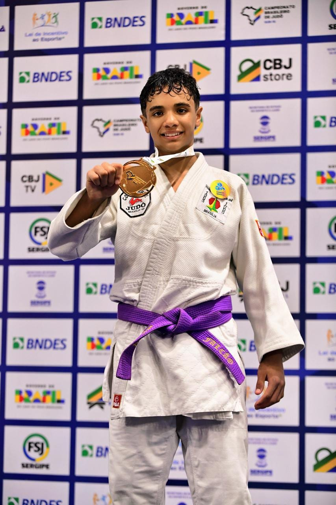
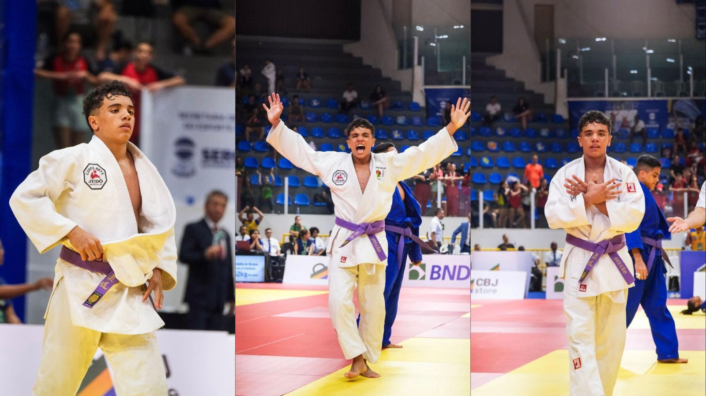

Currículo Esportivo · Proposta de Patrocínio — Judô de Alto Rendimento


Rodrigo Octávio Falcão Souza Jordão Ramos
Atleta de Judô — Categoria de Base Nacional / Alto Rendimento
Judô · Categoria SUB-15 · -55kg / -60kgTelefone: (61) 98153-1053
Objetivo profissional e esportivo
Consolidar a carreira no alto rendimento do Judô brasileiro como uma das maiores promessas de Brasília para a modalidade, representando o Distrito Federal e o Brasil em circuitos nacionais e internacionais, com trajetória planejada da base à elite e visão de longo prazo rumo aos Jogos Olímpicos.
- Construir caminho formativo base → juvenil → sênior, com foco em seleções brasileiras e competições de elite.
- Competir em eventos de referência nacional e internacional com regularidade e resultados consistentes.
- Desenvolver excelência técnica, tática e física, aliada a disciplina, respeito e fair play.
- Manter equilíbrio entre alto rendimento esportivo e formação escolar em andamento.
Sonhos e metas de carreira
- 2026: Manter a liderança no ranking do DF; defender o título brasileiro SUB-15; ampliar presença no circuito internacional.
- 2027–2030: Integrar seleções de base e juvenil; consolidar pódios em Pan-Americanos e Sul-Americanos; evoluir no programa de alto rendimento.
- Visão olímpica: Integrar centros de excelência do COB/CBJ e disputar vagas olímpicas nos ciclos vindouros (projeção a partir de 2032).
- Sonho: Representar o Brasil nos Jogos Olímpicos e elevar o Judô do Distrito Federal ao mais alto nível mundial.
Formação esportiva
- Academia Corpo Arte — Guará/DF (clube formador e preparação técnica de Judô).
- FEMEJU DF — Federação Metropolitana de Judô do Distrito Federal (filiação e competições oficiais).
- Centro de Treinamento Invictus — Invictus Laboratório Atlético, 1º núcleo de alto rendimento esportivo de Brasília: preparação física, análise de desempenho e gestão de performance.
- Colégio Olimpo — formação escolar e participação nos Jogos Escolares do DF e Jogos Escolares Brasileiros (Série Ouro).
- Constrictor Team — Jiu-jitsu (complemento de luta e base para o combate no chão).
- Categorias de competição: SUB-13 (2023/2024) e SUB-15 (2025/2026), com progressão técnica e competitiva contínua.
Perfil do atleta
Atleta de Judô em plena ascensão nacional, com resultados consistentes em campeonatos estaduais, regionais, nacionais e internacionais, representando disciplina, performance, resiliência e excelência competitiva.
- Atleta da categoria de base do Judô Brasileiro.
- SUB-15 Masculino (-55kg / -60kg) — 13 a 14 anos — 2025/2026.
- SUB-13 Masculino (-48kg / -50kg) — 11 a 12 anos — 2023/2024.
- Trajetória marcada por títulos consecutivos e presença constante no pódio nacional.
Principais resultados
2026
- Campeão Brasileiro de Judô SUB-15 — Nacional 2026
- Campeão Estadual de Judô — Brasília 2026
- Campeão Brasileiro Região IV — 2026
- Líder Ranking Judô Brasília
2025
- Vice Sul-Americano de Judô — Assunção / Paraguai
- 3º Brasileiro de Judô SUB-15 — Nacional 2025
- Campeão Estadual de Judô — Brasília 2025
- 2º Brasileiro Região IV — 2025
- Campeão Jogos Escolares do Distrito Federal 2025
- 3º Jogos Escolares Brasileiros — Série Ouro 2025
- Líder Ranking Judô Brasília 2025
2024
- Vice Pan-Americano SUB-13 — Varadero / Cuba
- Campeão Brasileiro de Judô SUB-15 — Nacional 2024
- Campeão Estadual de Judô — Brasília 2024
- Campeão Brasileiro Região IV — 2024
- Líder Ranking Judô Brasília
- Campeão XVIII Copa Minas 2024
- Campeão Jogos Escolares do Distrito Federal
Por que patrocinar?
- Associação da marca a valores como disciplina, superação e alta performance.
- Fortalecimento institucional da empresa através do esporte.
- Conexão emocional da marca com famílias, juventude e educação.
- Exposição em competições estaduais, nacionais e internacionais.
Contrapartidas ao patrocinador
- Inserção da marca em kimono e agasalhos oficiais.
- Divulgação em redes sociais e materiais institucionais.
- Participação em eventos corporativos e campanhas promocionais.
- Presença da marca em campeonatos e conteúdos esportivos.
Objetivo do projeto de patrocínio
- Viabilizar participação em campeonatos nacionais e internacionais.
- Custear preparação técnica, equipe multidisciplinar e deslocamentos.
- Fortalecer a evolução esportiva rumo ao alto rendimento.
Mais do que apoiar um atleta, trata-se de investir em um projeto de formação de campeão, conectando sua marca a uma trajetória vencedora, inspiradora e com enorme potencial de visibilidade e crescimento.
Investimento e metas 2026
Proposta flexível de apoio — valores e benefícios a combinar conforme o interesse da empresa.
Bronze
Apoio em competições regionais e estaduais · menção em redes sociais
Prata
Apoio em nacionais · logo em materiais · presença em eventos selecionados
Ouro
Patrocínio master · kimono/agasalho · internacionais · campanhas conjuntas
Calendário competitivo 2026: Brasileiro, estaduais, Região IV e preparação para circuito internacional — detalhar datas sob consulta.
